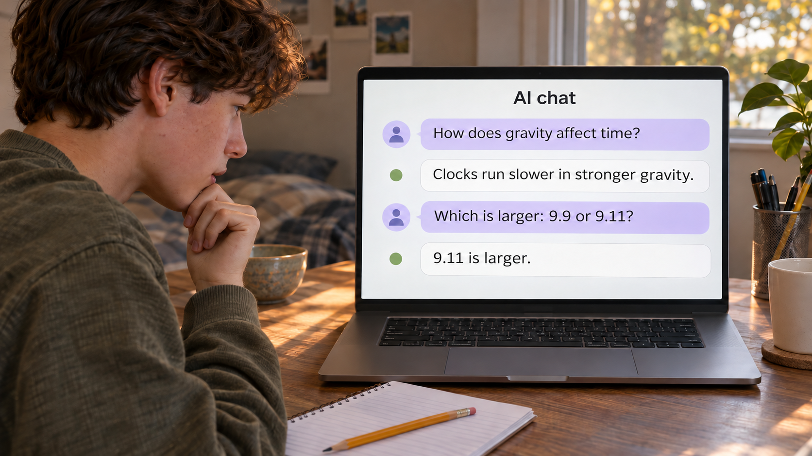
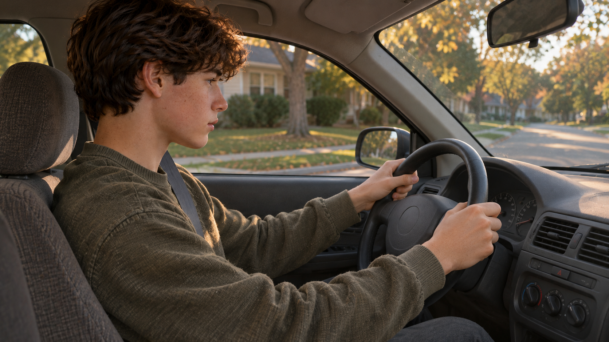
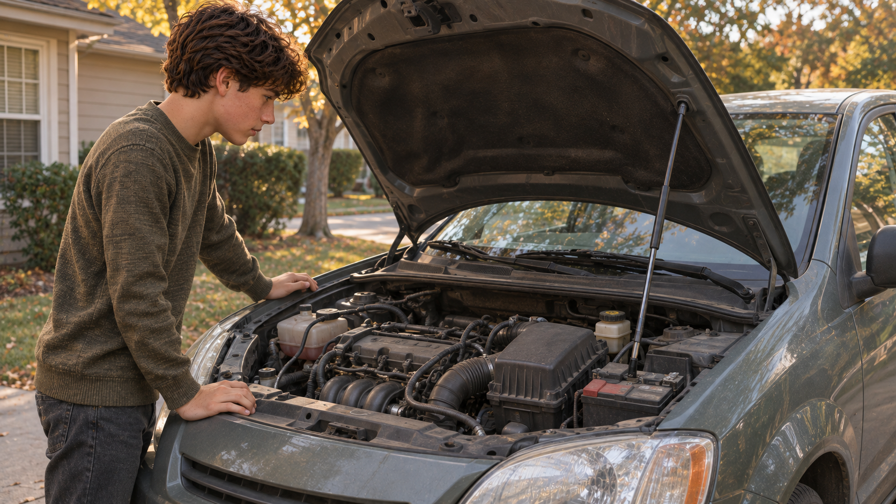
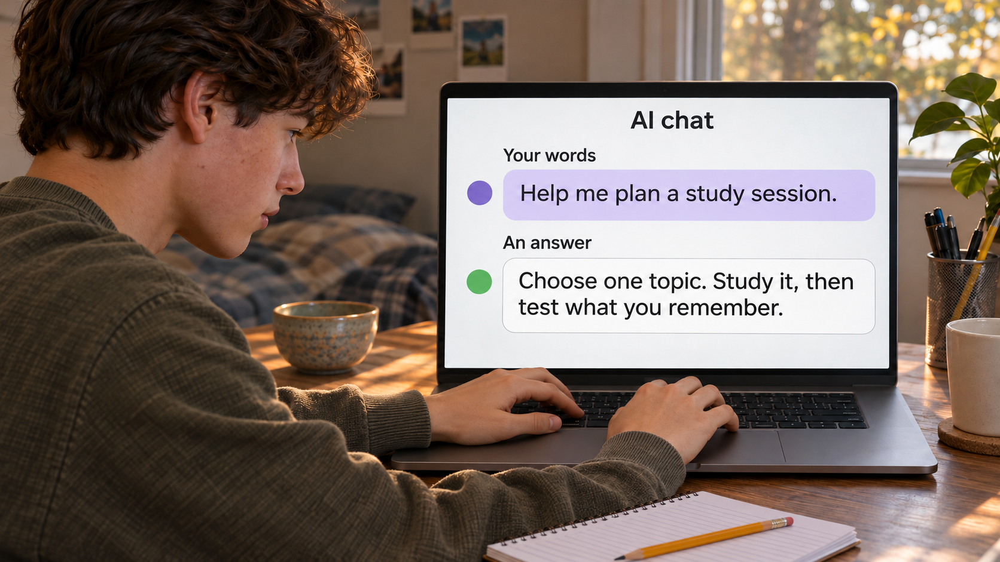

Understand AI · Direction preview · November 11, 2026
One student. One connected visual story.
Four representative stills for reviewing the photographic style, clarity, and scene continuity. Click any image to inspect the full-size frame.

The same tool can do both.
A useful explanation followed by a basic error. The final AI reply is deliberately wrong: 9.9 is larger than 9.11. This is an illustrative mock conversation.

You can learn to drive it.
A recognizable action in an ordinary car. The picture carries the analogy without labels or machinery diagrams.

Then look underneath.
The same student and car, now showing the engine he could use without understanding. Real objects, natural curiosity, no fantasy AI machinery.

Your words become an answer.
Return to the same desk and laptop. A readable prompt and answer show the transformation we want to understand; the coming lessons explain the inside.